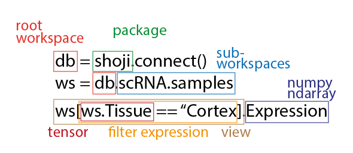

Package shoji
Shoji is a tensor database, suitable for storing and working with very large-scale datasets organized as vectors, matrices and higher-dimensional tensors.
Key features
- Multi-petabyte scalable, distributed, high-performance database
- Data modelled as N-dimensional tensors with boolean, string or numeric elements
- Supports both regular and jagged tensors
- Automatic chunking and compression
- Relationships expressed through shared named dimensions
- Read and write data through views created by powerful filter expressions
- Automatic indexing for fast filtering
- Data safety through transactions and ACID properties (atomicity, consistency, isolation, durability)
- Concurrent read/write access
- Elegant, convenient Python API, aligned with numpy
Oh, and it's pretty fast.
Overview
Data model
In Shoji, data is stored as tensors, and relationships are expressed using shared dimensions.
Dimensions can be named, and named dimensions express relationships and constraints between tensors. Tensors that share a named dimension must have the same length along that dimension (and this relationship is enforced when adding data).
You can think of rows as your data objects, dimensions as object types, and the tensors as object
attributes. For example, a set of vectors (e.g. SampleID, Age, Tissue, Date) defined on a
samples dimension could be seen as the attributes of samples, and an individual sample would correspond
to an individual row across all tensors.
Tensors can also be related to multiple named dimensions. For example, omics data (e.g. gene expression)
is often represented as matrices, which can be represented in Shoji as rank-2 tensors with two named
dimensions, e.g. cells and genes. Metadata about cells and genes would be stored as rank-1 tensors
(vectors) along the cells and genes dimensions, respectively. Similarly, multichannel timelapse
image data can be represented as high-rank tensors with dimensions
such as x, y, channel, and timepoint. This makes Shoji fundamentally
different from tabular (relational) databases, which struggle to represent multidimensional data.
The fundamental operations in shoji are: creating a tensor, appending values, reading values, updating values. Tensors can be deleted, but individual tensor values cannot.
ACID guarantees
Shoji treats the slice as the atomic unit when writing data. This means that if your program crashes in the middle of an operation, you are guaranteed that there will be no half-created rows, or partially updated elements in the database.
When more than one tensor shares their first dimension, the atomic unit for writing new data (i.e. for
Dimension.append()) is a slice across all tensors that share the same first dimension.
In other words, if your program crashes in the middle of an append() operation, shoji guarantees
that some number of complete indices (or nothing at all) will have been written across all the relevant tensors,
ensuring that they stay in sync.
If you need stronger guarantees, you can wrap multiple database operations in a shoji.transaction.
Limitations
Shoji is built on FoundationDB, a powerful open-source key-value store developed by Apple. It is FoundationDB that gives Shoji a solid foundation of performance, scalability and ACID guarantees. In order to gain these features, there are a few limitations though:
-
Transactions cannot exceed 5 seconds. If a transaction takes longer, it's terminated and rolled back. For Shoji, this limits the total feasible size of a slice (or a set of rows for append operations), since Shoji reads and writes slices transactionally.
-
Transactions exceeding 1 MB can cause performance issues, and transactions cannot exceed 10 MB. This also limits the total feasible size of a tensor slice, since Shoji reads and writes slices transactionally to ensure consistency.
-
FoundationDB is optimized to run on SSDs. Running on mechanical disks is discouraged.
For more details about these and some other limitations, see the FoundationDB docs
Getting started
Installation
Shoji requires Python 3.7+ (we recommend Anaconda)
First, in your terminal, install the shoji Python package:
$ git clone https://github.com/linnarsson-lab/shoji.git
$ pip install -e shoji
Next, install FoundationDB (or ask your database adminstrator for a cluster file).
Finally, using Python, check that you can now connect to the database:
import shoji
db = shoji.connect()
db
Typing db alone at the last line above should return a representation of the contents of the database
(which might be empty at this point).
First steps
Let's create a workspace and fill it with some data:
db.scRNA = shoji.Workspace()
db.scRNA.cells = shoji.Dimension(shape=None)
db.scRNA.genes = shoji.Dimension(shape=5000)
db.scRNA.Expression = shoji.Tensor("int16", ("cells", "genes"), inits=np.random.randint(0, 10, size=(1000, 5000), dtype="int16"))
db.scRNA.Age = shoji.Tensor("uint16", ("cells",), inits=np.random.randint(0, 50, size=1000, dtype="uint16"))
db.scRNA.GeneLength = shoji.Tensor("uint16", ("genes",), inits=np.random.randint(0, 5000, size=5000, dtype="uint16"))
db.scRNA.Chromosome = shoji.Tensor("string", ("genes",), inits=np.full(5000, "chr1", dtype="object"))
Now we can query the database using shoji.filters. We'll load the Expression matrix,
including only rows ("cells" dimension) where Age > 10 and columns ("genes" dimension)
where GeneLength < 1000:
ws = db.scRNA
view = ws[ws.GeneLength < 1000, ws.Age > 10]
view.Expression.shape
# Returns something like (813, 4999)
Learn more

Workspaces (shoji.workspace)
Workspaces let you organise collections of data that belong together. Tensors and dimensions are created in workspaces, and tensors and dimensions that live in different workspaces are unrelated to each other.
Tensors (shoji.tensor)
Tensors are N-dimensional arrays of numbers, booleans or strings. All data in shoji is stored as tensors.
Dimensions (shoji.dimension)
Dimensions define the relationship between tensors, and impose constraints that ensure your database is consistent.
Filters (shoji.filter)
Filters are expressions used to select tensor rows. Filters create views, and views are the only way to read and write data in shoji.
Views (shoji.view)
Views are windows into the database, created by applying filters. Views are the only way to read and write data in shoji.
Transactions (shoji.transaction)
Perform complex database operations atomically.
Expand source code
"""
Shoji is a tensor database, suitable for storing and working with very large-scale datasets
organized as vectors, matrices and higher-dimensional tensors.
## Key features
- Multi-petabyte scalable, distributed, high-performance database
- Data modelled as N-dimensional tensors with boolean, string or numeric elements
- Supports both regular and jagged tensors
- Automatic chunking and compression
- Relationships expressed through shared named dimensions
- Read and write data through views created by powerful filter expressions
- Automatic indexing for fast filtering
- Data safety through transactions and [ACID](https://en.wikipedia.org/wiki/ACID) properties (atomicity, consistency, isolation, durability)
- Concurrent read/write access
- Elegant, convenient Python API, aligned with numpy
Oh, and it's pretty fast.
## Overview
### Data model
In Shoji, data is stored as tensors, and relationships are expressed using shared dimensions.
Dimensions can be named, and named dimensions express relationships and constraints between tensors.
Tensors that share a named dimension must have the same length along that dimension (and this relationship
is enforced when adding data).
You can think of rows as your data *objects*, dimensions as object *types*, and the tensors as object
*attributes*. For example, a set of vectors (e.g. `SampleID`, `Age`, `Tissue`, `Date`) defined on a
`samples` dimension could be seen as the attributes of samples, and an individual sample would correspond
to an individual row across all tensors.
Tensors can also be related to multiple named dimensions. For example, omics data (e.g. gene expression)
is often represented as matrices, which can be represented in Shoji as rank-2 tensors with two named
dimensions, e.g. `cells` and `genes`. Metadata about cells and genes would be stored as rank-1 tensors
(vectors) along the `cells` and `genes` dimensions, respectively. Similarly, multichannel timelapse
image data can be represented as high-rank tensors with dimensions
such as `x`, `y`, `channel`, and `timepoint`. This makes Shoji fundamentally
different from tabular (relational) databases, which struggle to represent multidimensional data.
The fundamental operations in shoji are: *creating a tensor*, *appending values*, *reading values*,
*updating values*. Tensors can be deleted, but individual tensor values cannot.
### ACID guarantees
Shoji treats the *slice* as the atomic unit when writing data. This means that if your program crashes in the
middle of an operation, you are guaranteed that there will be no half-created rows, or partially
updated elements in the database.
When more than one tensor shares their first dimension, the atomic unit for writing new data (i.e. for
`shoji.dimension.Dimension.append`) is a slice across all tensors that share the same first dimension.
In other words, if your program crashes in the middle of an `append()` operation, shoji guarantees
that some number of complete indices (or nothing at all) will have been written across all the relevant tensors,
ensuring that they stay in sync.
If you need stronger guarantees, you can wrap multiple database operations in a `shoji.transaction`.
### Limitations
Shoji is built on [FoundationDB](https://www.foundationdb.org), a powerful open-source key-value store
developed by [Apple](https://www.apple.com). It is FoundationDB that gives Shoji a solid foundation
of performance, scalability and ACID guarantees. In order to gain these features, there are a few limitations
though:
* Transactions cannot exceed 5 seconds. If a transaction takes longer, it's terminated and rolled back.
For Shoji, this limits the total feasible size of a slice (or a set of rows for append operations), since
Shoji reads and writes slices transactionally.
* Transactions exceeding 1 MB can cause performance issues, and transactions cannot exceed 10 MB. This
also limits the total feasible size of a tensor slice, since Shoji reads and writes slices transactionally
to ensure consistency.
* FoundationDB is optimized to run on SSDs. Running on mechanical disks is discouraged.
For more details about these and some other limitations, see the [FoundationDB docs](https://apple.github.io/foundationdb/known-limitations.html)
## Getting started
### Installation
Shoji requires Python 3.7+ (we recommend [Anaconda](https://www.anaconda.com/products/individual))
First, in your terminal, install the shoji Python package:
```shell
$ git clone https://github.com/linnarsson-lab/shoji.git
$ pip install -e shoji
```
Next, install [FoundationDB](https://apple.github.io/foundationdb/getting-started-mac.html) (or ask your
database adminstrator for a [cluster file](https://apple.github.io/foundationdb/administration.html#foundationdb-cluster-file)).
Finally, using Python, check that you can now connect to the database:
```python
import shoji
db = shoji.connect()
db
```
Typing `db` alone at the last line above should return a representation of the contents of the database
(which might be empty at this point).
### First steps
Let's create a workspace and fill it with some data:
```python
db.scRNA = shoji.Workspace()
db.scRNA.cells = shoji.Dimension(shape=None)
db.scRNA.genes = shoji.Dimension(shape=5000)
db.scRNA.Expression = shoji.Tensor("int16", ("cells", "genes"), inits=np.random.randint(0, 10, size=(1000, 5000), dtype="int16"))
db.scRNA.Age = shoji.Tensor("uint16", ("cells",), inits=np.random.randint(0, 50, size=1000, dtype="uint16"))
db.scRNA.GeneLength = shoji.Tensor("uint16", ("genes",), inits=np.random.randint(0, 5000, size=5000, dtype="uint16"))
db.scRNA.Chromosome = shoji.Tensor("string", ("genes",), inits=np.full(5000, "chr1", dtype="object"))
```
Now we can query the database using `shoji.filter`s. We'll load the Expression matrix,
including only rows (`"cells"` dimension) where `Age > 10` and columns (`"genes"` dimension)
where `GeneLength < 1000`:
```python
ws = db.scRNA
view = ws[ws.GeneLength < 1000, ws.Age > 10]
view.Expression.shape
# Returns something like (813, 4999)
```
## Learn more
..image:: assets/bitmap/overview@2x.png
### Workspaces (`shoji.workspace`)
Workspaces let you organise collections of data that belong together. Tensors and dimensions
are created in workspaces, and tensors and dimensions that live in different workspaces
are unrelated to each other.
### Tensors (`shoji.tensor`)
Tensors are N-dimensional arrays of numbers, booleans or strings. All data in shoji is
stored as tensors.
### Dimensions (`shoji.dimension`)
Dimensions define the relationship between tensors, and impose constraints that ensure
your database is consistent.
### Filters (`shoji.filter`)
Filters are expressions used to select tensor rows. Filters create views, and views
are the only way to read and write data in shoji.
### Views (`shoji.view`)
Views are windows into the database, created by applying filters. Views
are the only way to read and write data in shoji.
### Transactions (`shoji.transaction`)
Perform complex database operations atomically.
"""
import fdb
fdb.api_version(620)
from .dimension import Dimension
from .tensor import Tensor, TensorValue
from .workspace import Workspace, WorkspaceManager
from .connect import connect
from .filter import Filter, CompoundFilter, TensorFilter, ConstFilter, DimensionBoolFilter, DimensionIndicesFilter, DimensionSliceFilter, TensorBoolFilter, TensorIndicesFilter, TensorSliceFilter
from .transaction import Transaction
from .groupby import GroupViewBy, GroupDimensionBy
from .view import ViewSub-modules
shoji.connect-
Connecting to a Shoji database cluster …
shoji.dimension-
Dimensions represent named, shared tensor axes. When two tensors share an axis, they are constrained to have the same number of elements along that …
shoji.filter-
Using filters …
shoji.groupby-
Grouping tensors and applying aggregations …
shoji.ioshoji.tensor-
All data in Shoji is stored as N-dimensional tensors. A tensor is a generalisation of scalars, vectors and matrices to N dimensions …
shoji.testsshoji.transaction-
Transactions, supporting atomic multi-statement operations. Usage: …
shoji.view-
Views let you work with a selected subset of a workspace. Reading from the view automatically returns values from the selected subset of the database …
shoji.workspace-
Workspaces let you organise collections of data that belong together. Workspaces can be nested, like folders in a file system …